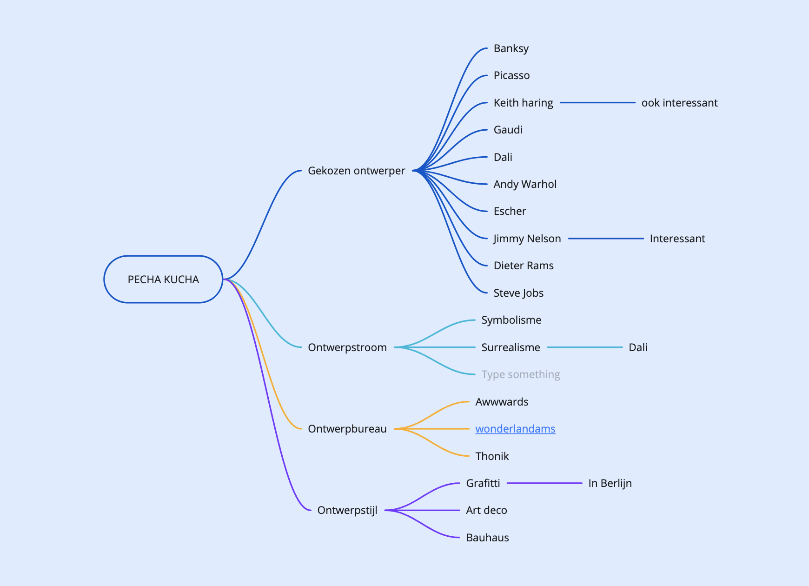
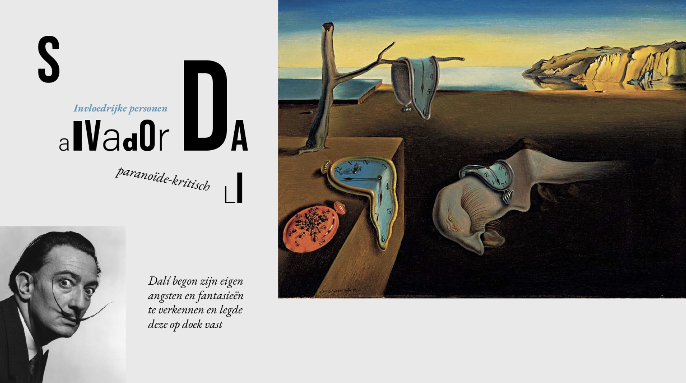
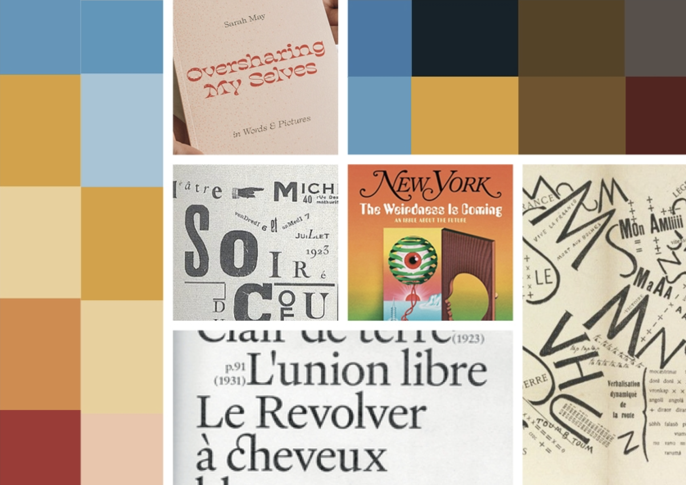
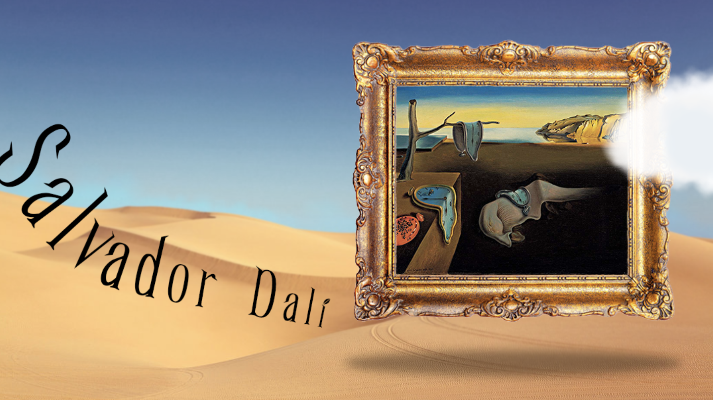

In een team hebben we een pecha kucha presentatie gegeven. Dit is een speciale manier van presenteren, het is een diavoorstelling van 20 afbeeldingen in een totale tijd van 6 minuten en 40 seconden. Elke dia wordt precies 20 seconden getoond. Ik zat samen in een team met Joël en Lizz (topteam).

Het onderwerp
We zijn begonnen met nadenken waar we de presentatie over wilden geven. We zijn hierom begonnen met een mindmap, hierin hebben we alle onderwerpen die ons interessant leken opgeschreven.
Keith Haring, het surrealisme en Jimmy Nelson spraken ons alle drie wel aan. Hier hebben we meer informatie over gezocht en uiteindelijk hebben we gekozen voor het surrealisme. Hier konden we veel over vertellen en de stijl sprak ons enorm aan.
De stijl
Voor de dia's wilden we het surrealistische heel erg terug laten komen. Hierom hebben we veel verschillende dingen geprobeerd en moodboards gemaakt. Iedereen heeft dingen geprobeerd en daarna hebben we er samen naar gekeken en de dingen die ons aanspraken gecombineerd.



Het eindresultaat
Op de website kun je de data en grafieken bekijken. We lichten kort uit waar het onderzoek over gaat en ook kun je zien wie er achter de data zit. De grafieken hebben we niet alleen voor desktop ontworpen, maar ook voor mobiel.